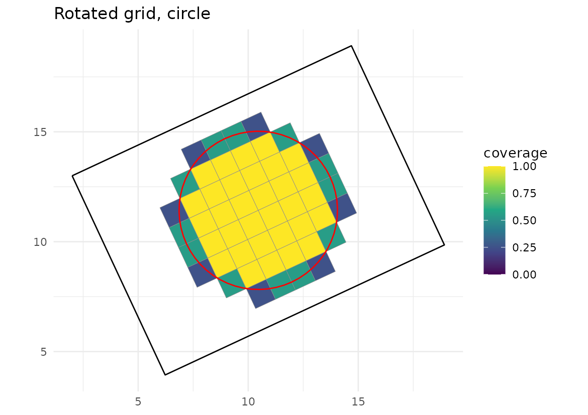
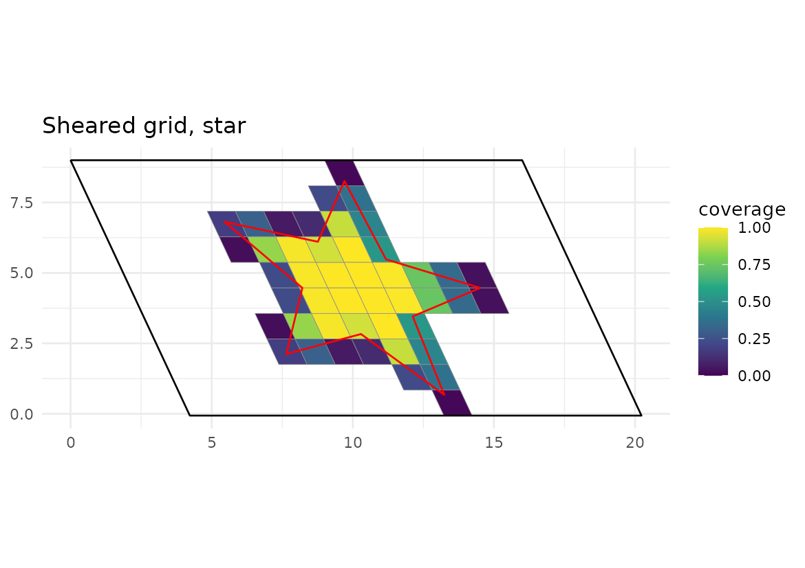
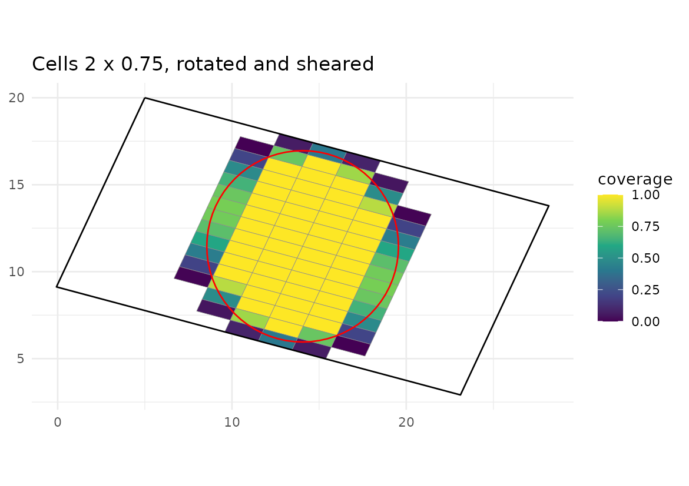
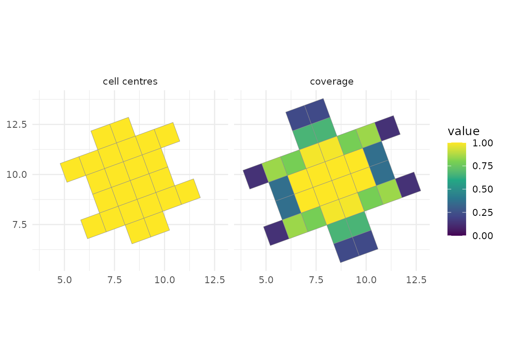
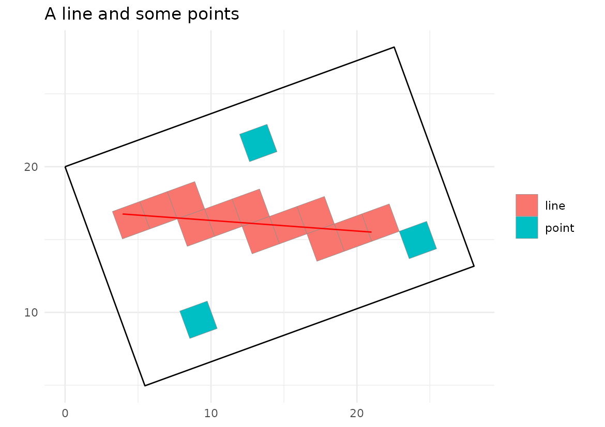

cb_burn() takes an axis-aligned extent. Many grids are
not that: a raster with a rotated or sheared geotransform, a swath, a
satellite scene on a slanted pixel lattice. cb_burn_index()
takes a GDAL-style geotransform instead.
The idea is small. Move the geometry into the grid’s index
space (fractional column and row) with the inverse of the
geotransform, and burn it on a lattice of unit cells. The records that
come back are already in the grid’s own (row, col). Because
the map from world to index space is affine, straight edges stay
straight, and the coverage fraction of a boundary cell is exactly the
fraction of that cell’s area (in world units) that the geometry covers.
Nothing is resampled and nothing is approximated, whatever the rotation,
shear or aspect of the cells.
This page is a gallery of cases, each checked against something independent.
library(cbr)
library(ggplot2)
## pixel position (col, row; 0-based, from the top-left corner) -> world
world <- function(gt, col, row) {
cbind(gt[1] + col * gt[2] + row * gt[3], gt[4] + col * gt[5] + row * gt[6])
}
poly_wkt <- function(...) {
rings <- list(...)
txt <- vapply(rings, function(m) {
m[nrow(m), ] <- m[1, ]
paste0("(", paste(sprintf("%.15g %.15g", m[, 1], m[, 2]), collapse = ", "), ")")
}, "")
wk::wkt(sprintf("POLYGON (%s)", paste(txt, collapse = ", ")))
}
shoelace <- function(m) {
n <- nrow(m)
abs(sum(m[-n, 1] * m[-1, 2] - m[-1, 1] * m[-n, 2])) / 2
}
cell_area <- function(gt) abs(gt[2] * gt[6] - gt[3] * gt[5])
## covered area in world units, from the burn alone
burn_area <- function(b) {
n <- sum(b$runs$col_end - b$runs$col_start + 1L) + sum(b$edges$fraction)
n * cell_area(attr(b, "geotransform"))
}
## the grid and the burn, in world coordinates
show_burn <- function(b, geom, fill = c("coverage", "kind"), title = NULL) {
fill <- match.arg(fill)
gt <- attr(b, "geotransform")
dm <- attr(b, "dimension")
cells <- cb_cells(b)
frame <- as.data.frame(world(gt, c(0, dm[1], dm[1], 0, 0), c(0, 0, dm[2], dm[2], 0)))
names(frame) <- c("x", "y")
co <- wk::wk_coords(wk::as_wkb(geom))
co$g <- interaction(co$feature_id, co$part_id, co$ring_id)
p <- ggplot() +
geom_polygon(data = cells,
aes(x, y, group = cell, fill = if (fill == "kind") kind else value),
colour = "grey55", linewidth = 0.15) +
geom_path(data = frame, aes(x, y), colour = "black") +
geom_path(data = co, aes(x, y, group = g), colour = "red", linewidth = 0.5) +
coord_equal() + labs(title = title, x = NULL, y = NULL) + theme_minimal()
if (fill == "coverage") {
p + scale_fill_viridis_c(limits = c(0, 1), name = "coverage")
} else {
p + scale_fill_discrete(name = NULL)
}
}A rotated grid
A 14 by 10 grid with unit cells, turned 25 degrees counter-clockwise,
and a circle of radius 3.6 near its middle.
cb_geotransform() writes the six GDAL numbers from an
origin (the grid’s top-left corner), a cell size, a rotation and a
shear.
gt <- cb_geotransform(origin = c(2, 13), res = 1, rotation = 25)
gt
#> [1] 2.0000000 0.9063078 0.4226183 13.0000000 0.4226183 -0.9063078
ang <- seq(0, 2 * pi, length.out = 61)
ring <- world(gt, 7 + 3.6 * cos(ang), 5 + 3.6 * sin(ang))
circle <- poly_wkt(ring)
b <- cb_burn_index(circle, gt, dimension = c(14, 10))
b
#> <cb_burn>
#> grid: 14 col x 10 row
#> extent: x[0, 14] y[0, 10]
#> affine: geotransform c( 2.000000, 0.906308, 0.422618, 13.000000, 0.422618, -0.906308)
#> world: x[2, 18.9145] y[3.93692, 18.9167] (extent above is index space)
#> mode: coverage
#> tables: runs=6, edges=28, lines=0, points=0, notes=0
show_burn(b, circle, title = "Rotated grid, circle")
Full cells come back as runs along the grid’s own rows; only the boundary cells carry a fraction. The covered area, summed from the burn, equals the area of the polygon:
c(burn = burn_area(b), polygon = shoelace(ring))
#> burn polygon
#> 40.64067 40.64067The same fractions can be had the slow way, by clipping each cell’s
quadrilateral with the polygon, using a general geometry library. They
agree to the single precision of the edges table.
cell_poly <- function(gt, col, row) {
sf::st_polygon(list(rbind(world(gt, col, row), world(gt, col + 1, row),
world(gt, col + 1, row + 1), world(gt, col, row + 1),
world(gt, col, row))))
}
target <- sf::st_polygon(list({ r <- ring; r[nrow(r), ] <- r[1, ]; r }))
ref <- vapply(seq_len(14 * 10) - 1L, function(i) {
cell <- cell_poly(gt, i %% 14, i %/% 14)
hit <- sf::st_intersection(cell, target)
if (length(hit)) as.numeric(sf::st_area(hit) / sf::st_area(cell)) else 0
}, numeric(1))
got <- as.vector(cb_materialize(b, background = 0))
max(abs(got - ref))
#> [1] 2.887116e-08A sheared grid
Shear turns the direction in which rows increase away from perpendicular, so the cells are parallelograms. Nothing else changes.
gt <- cb_geotransform(origin = c(0, 9), res = 1, shear = 25)
a <- seq(0, 2 * pi, length.out = 11)
r <- rep(c(4.4, 1.9), length.out = 11)
ring <- world(gt, 8 + r * cos(a), 5 + r * sin(a))
star <- poly_wkt(ring)
b <- cb_burn_index(star, gt, dimension = c(16, 10))
show_burn(b, star, title = "Sheared grid, star")
c(burn = burn_area(b), polygon = shoelace(ring))
#> burn polygon
#> 22.26746 22.26746Cells that are not square
Cell sizes can differ in the two directions, and combine with rotation and shear. Fractions are fractions of the cell’s own area, so they are still exact.
gt <- cb_geotransform(origin = c(5, 20), res = c(2, 0.75), rotation = -15, shear = -10)
centre <- world(gt, 6, 8)
ang <- seq(0, 2 * pi, length.out = 73)
ring <- cbind(centre[1] + 5.5 * cos(ang), centre[2] + 5.5 * sin(ang))
disc <- poly_wkt(ring)
b <- cb_burn_index(disc, gt, dimension = c(12, 16))
show_burn(b, disc, title = "Cells 2 x 0.75, rotated and sheared")
c(burn = burn_area(b), polygon = shoelace(ring))
#> burn polygon
#> 94.9126 94.9126Coverage or cell centres
By default the burn gives exact coverage.
coverage = FALSE uses the cell-centre rule (the usual
“fasterize” meaning of rasterizing a polygon) and returns whole cells
only, much faster on big inputs. On a rotated grid the difference is
easy to see:
gt <- cb_geotransform(origin = c(0, 12), res = 1, rotation = 20)
a <- seq(0, 2 * pi, length.out = 13)
ring <- world(gt, 7 + c(4, 2)[(seq_along(a) %% 2) + 1] * cos(a),
5 + c(4, 2)[(seq_along(a) %% 2) + 1] * sin(a))
shape <- poly_wkt(ring)
exact <- cb_burn_index(shape, gt, c(14, 10))
centre <- cb_burn_index(shape, gt, c(14, 10), coverage = FALSE)
both <- rbind(cbind(cb_cells(exact), mode = "coverage"),
cbind(cb_cells(centre), mode = "cell centres"))
ggplot(both, aes(x, y, group = cell, fill = value)) +
geom_polygon(colour = "grey55", linewidth = 0.15) +
coord_equal() + facet_wrap(~mode) + theme_minimal() +
scale_fill_viridis_c(limits = c(0, 1), name = "value") +
labs(x = NULL, y = NULL)
c(coverage = burn_area(exact), cell_centres = burn_area(centre), polygon = shoelace(ring))
#> coverage cell_centres polygon
#> 24 24 24The two answers are different questions: the cell-centre rule says which cells have their centre inside the polygon, not how much of each cell is covered, so its cells need not add up to the polygon’s area. For this shape the totals happen to coincide, with cells gained and lost along the boundary balancing out; the cells themselves clearly differ.
Real coordinates
Nothing about the method cares how big the world coordinates are. Here is a UTM-sized north-up grid, where the geotransform is the usual one for a raster file. Going through index space gives the same records as burning on the regular extent directly:
gt <- c(432100, 30, 0, 5810900, 0, -30)
wedge <- wk::wkt("POLYGON ((432250.5 5810410.2, 432840.9 5810530.7,
432700.3 5810150.8, 432250.5 5810410.2))")
viaindex <- cb_burn_index(wedge, gt, c(40, 30), crs = "EPSG:32755")
regular <- cb_burn(wedge, extent = c(432100, 432100 + 40 * 30, 5810900 - 30 * 30, 5810900),
dimension = c(40, 30))
all.equal(viaindex$edges, regular$edges, tolerance = 1e-5)
#> [1] TRUE
all.equal(viaindex$runs, regular$runs)
#> [1] TRUE
attr(viaindex, "world_extent")
#> [1] 432100 433300 5810000 5810900
attr(viaindex, "crs")
#> [1] "EPSG:32755"Lines and points
Lines report the length inside each cell and points report the cell they fall in. When the cells are similar to squares (equal sides at right angles, at any rotation) the lengths come back in world units.
gt <- cb_geotransform(origin = c(0, 20), res = 2, rotation = 20)
p <- world(gt, 1.3, 2.2)
q <- world(gt, 9.1, 5.7)
pts <- world(gt, c(2.5, 6.5, 10.5), c(6.5, 1.5, 6.5))
geoms <- wk::wkt(c(
sprintf("LINESTRING (%.15g %.15g, %.15g %.15g)", p[1], p[2], q[1], q[2]),
sprintf("MULTIPOINT ((%.15g %.15g), (%.15g %.15g), (%.15g %.15g))",
pts[1, 1], pts[1, 2], pts[2, 1], pts[2, 2], pts[3, 1], pts[3, 2])
))
b <- cb_burn_index(geoms, gt, c(12, 8))
show_burn(b, geoms, fill = "kind", title = "A line and some points")
Several geometries
Each input geometry gets an id, so overlaps are kept
apart. summary() is in index space and works as it does for
any burn:
gt <- cb_geotransform(origin = c(0, 12), res = 1, rotation = 15, shear = 10)
discs <- poly_wkt(world(gt, 4 + 3 * cos(ang), 5 + 3 * sin(ang)))
for (centre in list(c(8, 4), c(7, 7))) {
discs <- c(discs, poly_wkt(world(gt, centre[1] + 3 * cos(ang), centre[2] + 3 * sin(ang))))
}
b <- cb_burn_index(discs, gt, c(14, 10))
summary(b)$area
#> id interior boundary lines points
#> 1 1 16 12.23846 0 0
#> 2 2 16 12.23846 0 0
#> 3 3 16 12.23846 0 0
table(cells_touched = cb_materialize(b, "count"), useNA = "ifany")
#> cells_touched
#> 1 2 3 <NA>
#> 52 19 6 63Cropping
A burn is sparse, so a small shape on a big grid costs almost
nothing. Before making a dense array, cb_crop() snaps the
burn to the cells it touches. On an affine grid that moves the origin of
the geotransform to the window’s top-left cell and leaves the cells
where they were. cb_materialize() then describes the
cropped grid, including its geotransform:
gt <- cb_geotransform(origin = c(100, 400), res = 5, rotation = 35, shear = 5)
small <- poly_wkt(world(gt, 40 + 6 * cos(ang), 22 + 4 * sin(ang)))
big <- cb_burn_index(small, gt, c(300, 200), crs = "EPSG:32755")
tight <- cb_crop(big)
c(full = prod(attr(big, "dimension")), cropped = prod(attr(tight, "dimension")))
#> full cropped
#> 60000 96
str(attr(cb_materialize(tight), "gis"))
#> List of 6
#> $ type : chr "raster"
#> $ bbox : num [1:4] 297 398 372 463
#> $ dim : num [1:3] 12 8 1
#> $ srs : chr "EPSG:32755"
#> $ datatype : chr "Float32"
#> $ geotransform: num [1:6] 297.11 4.1 3.21 428.56 2.87 ...The bbox there is the bounding box of the cropped grid’s
outline in world coordinates; the geotransform is what says
where each cell is.